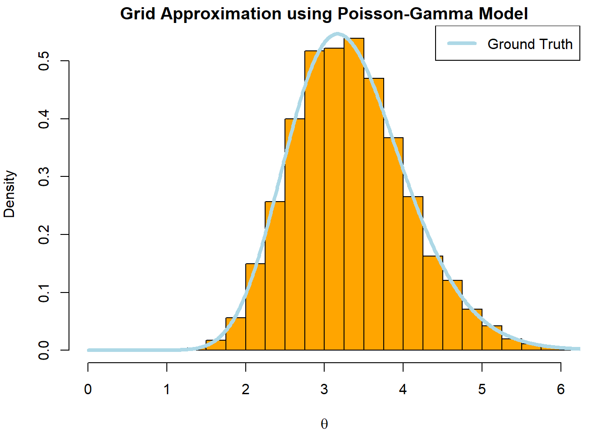
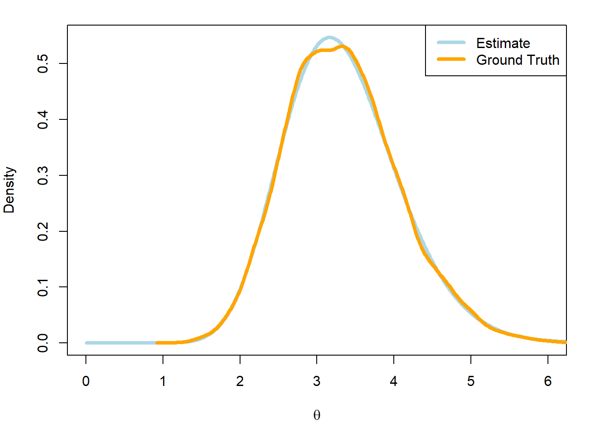
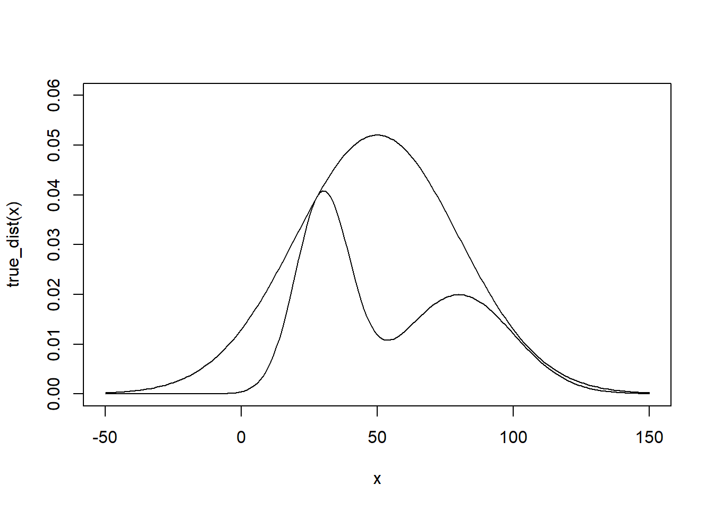
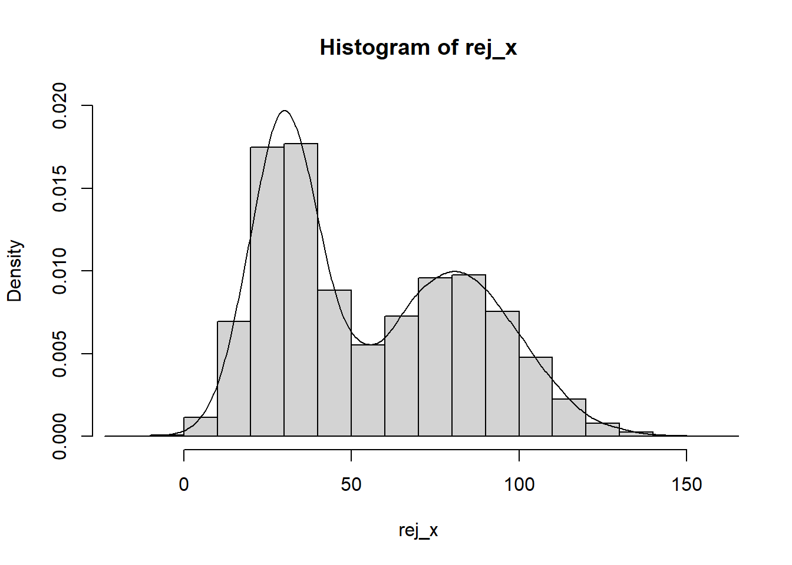
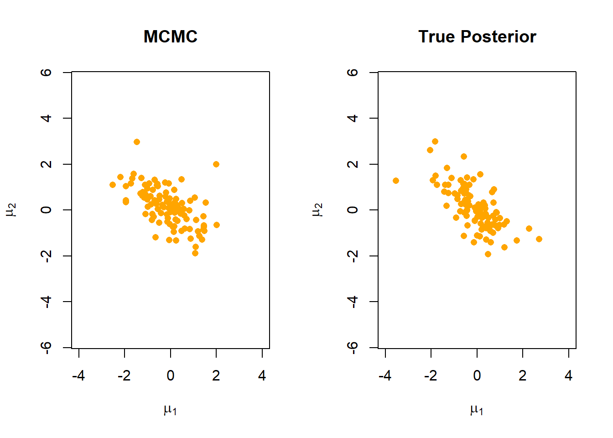

Previously we have looked at Bayesian models with closed form solutions for the marginal likelihood and posterior. However, in cases where more complex models are required, the marginal likelihood is often not closed form making it impossible to solve the posterior analytically.
In this cases, we are required to approximate the posterior from which we can then compute the statistics of interest which we saw in the previous section.
There are two key ways to approximate the posterior:
Sampling/Simulation: we can generate random samples from the posterior distribution to then use the empirical results as an estimate of the posterior.
Variational Inference: we can approximate the posterior by using a closed-form surrogate distribution.
A simple form of variational inference is normal approximation, where the central limit theorem is used to justify the use of the normal distribution as a surrogate posterior. In this chapter we will focus on sampling methods for posterior approximation.
8.0.1 Sampling Methods
To approximate the posterior by simulation, we need to generate random samples from the posterior. This is trivial if the posterior is a known distribution with a derived simulation method. However, this becomes interesting when the posterior isn’t closed form. We can achieve this by making use of the unnormalized posterior density or any function \(q(\theta;y)\) that is proportional to it.:
and generating random samples from this to approximate the posterior.
To generate the random samples, we can use rejection sampling or importance sampling for simple models. There are also many probabilistic programming tools available to automatically generate simulations.
8.0.2 Grid Approximation
This method, also know as direct discrete approximation, works as follows:
Create an even-spaced grid \(g_1 = a + i/2,…,g_m = b - i/2\) where \(a\) and \(b\) are the lower and upper bounds of the parameter space of the posterior and \(i\) and \(m\) are the grid increments and number of grid points respectively.
Evaluate the values of the unnormalized posterior density across the grid points \(q(g_j;y)\) and normalize them by their sum to estimate the posterior values:
Generate a sample for \(\theta_s\) from a categorical distribution with \(m\) outcomes ($g_1,…,g_m$) with respective probabilities \(\hat{p}_1,...,\hat{p}_m\)
Add zero-centered uniformally distributed noise \(\epsilon\) that has an interval length equal to the grid interval spacing such that:
\[\hat{\theta}_s = \theta_s + \epsilon\]
where \(\epsilon \sim Uniform(-i/2,i/2)\)
This generates a process similar to numerical integration, meaning that this approximation approach is limited to a finite interval.
Note: I have been strictly using \(\theta\) as the symbol for parameters across the different models used to make it clear what symbol represents the distribution parameter. In practice, different distributions make use of different symbols for their parameter. Examples are \(\alpha, \beta, \lambda\) some of which were used in previous sections when defining the prior distributions.
8.0.2.1 Example
We can demonstrate the usage of grid approximation with the Poisson-gamma model we explored previously. Simulation isn’t necessary here since the posterior is closed-form, but this will at least demonstrate how grid approximation is able to approximate it.
Recall that the posterior of the Poisson-Gamma model had the following form:
\[
\Theta|Y \sim Gamma(\alpha + s_n,\beta + n)
\]
true_theta <-3a <- b <-1n <-5set.seed(123)y <-rpois(n,true_theta)#Un-normalized Posterior (numerator for gamma distribution)q <-function(theta,y,n,alpha,beta){ theta^(alpha +sum(y) -1) *exp(-(n + beta)*theta)}#Explore theta on (0,25) --> Need a fixed range low_bound <-0high_bound <-20#Grid incrementi <-0.01grid <-seq(low_bound + i/2, high_bound - i/2,by = i)n_sim <-10000grid_n <-length(grid)grid_val <-q(grid,y,n,a,b)#Normalize to create a proper categorical distributiongrid_norm <- grid_val/sum(grid_val)## Simulate valuessim_idx <-sample(1:grid_n,n_sim,prob = grid_norm,replace =TRUE)#Noise parametere <-runif(n_sim,-i/2,i/2)theta_sim <- grid[sim_idx] + epar(mfrow =c(1,1),mar =c(4,4,1.5,1.5))## Visualize with histogramhist(theta_sim,col ='orange',breaks =seq(0,8,0.25), probability =TRUE,main ='Grid Approximation using Poisson-Gamma Model',xlab =expression(theta),xlim =c(0,6))lines(grid,dgamma(grid,a +sum(y),b + n),col ='lightblue',lwd =4)legend('topright', legend ='Ground Truth', col ='lightblue',lwd =4)

## Visualize with density estimateplot(grid,dgamma(grid,a +sum(y),b + n), type ='l',col ='lightblue',lwd =4, ylab ='Density',xlab =expression(theta),xlim =c(0,6))lines(density(theta_sim),col ='orange',lwd =4)legend('topright', legend =c('Estimate','Ground Truth'), col =c('lightblue','orange'),lwd =4)

Note that we needed to explore \(\theta\) on a fixed interval (0,25) to be able to approximate it. We can determine the plausible range of values to explore using the prior (if it is informative) or the likelihood. The key requirement is that we make sure the interval covers nearly all of the pmf for the distribution.
We can clearly see that the grid approximation has allowed us to correctly approximate the posterior without having to evaluate it analytically.
8.0.2.2 Example #2 : Non-conjugate priors
Let’s look at an example of a non-conjugate distribution, where the normalizing constant is such that the posterior is not a known distribution and is therefore not closed-form (intractable). A common example is using a log-normal prior for a Poisson likelihood. In essence, if our random variable is \(X\) and is normally distributed, we can use a reparameterization of the r.v, \(Y = e^X\) to get a log-normal distribution with the mean and variance being equal to the log of the mean and variance for\(X\) .
Our model therefore uses the following distributions:
And a marginalized joint pdf (numerator) we cannot integrate over (intractable). We can now apply grid approximation! We will be reusing the distribution we create in the last example.
#Approximating the distribution we generated in the previous exampleq <-function(theta,y,n,mu,sigma2){ theta^(sum(y) -1) *exp(-n*theta-(log(theta)-mu)^2/ (2*sigma2))}mu <-0sigma2 <-1#Explore theta on (0,25) --> Need a fixed range low_bound <-0high_bound <-20#Grid incrementi <-0.01grid <-seq(low_bound + i/2, high_bound - i/2,by = i)grid_val <-q(grid,y,n,mu,sigma2)grid_norm <- grid_val/sum(grid_val)## Simulate valuessim_idx <-sample(1:grid_n,n_sim,prob = grid_norm,replace =TRUE)#Noise parametere <-runif(n_sim,-i/2,i/2)theta_sim <- grid[sim_idx] + e## Visualizepar(mfrow =c(1,1),mar =c(4,4,1.5,1.5))#plot 1hist(theta_sim,col ='orange',breaks =seq(0,8,0.25), probability =TRUE,main ='Grid Approximation using Poisson-LogNormal',xlab =expression(theta),xlim =c(0,8),ylim =c(0,0.75))lines(grid,dgamma(grid,a +sum(y),b + n),col ='lightblue',lwd =4)legend('topright', legend ='Ground Truth', col ='lightblue',lwd =4)
We can see that our approximation is close to the ground truth, but is slightly off. This could be seen as an indication that the selected prior may not be the best option (see result with gamma prior above)!
8.0.3 Monte Carlo Methods
We have now seen that a sufficient number of simulations can approximate the ground truth posterior. These simulations can also be used to calculate summary statistics such as the posterior mean, variance and credible intervals!
In general, computing integrals via simulations is referred to as Monte Carlo integration or the Monte Carlo method. These types of methods depend on the strong law of large numbers (SLL).
8.0.3.1 Strong law of large numbers
Where we have a sequence of random variables \(Y_i,…,Y_n\) that are i.i.d. with a finite expected value \(\mu\) , we have that almost surely (a.s.):
We are able to say almost surely as the above statement is said to converges to the result with a probability of one.
SLL implies that the sample mean of an i.i.d sequence of random variables will always converge to the expected value of the underlying distribution with sufficient sample size. In the case of coin tosses, we would therefore expect that after enough trials, by SLL, that the expected value is 0.5 (assuming it is an unbiased coin!).
8.0.3.2 Example: Monte Carlo Integration
We can revisit our example from the beginning of the chapter where we estimate \(\theta\). By SLL, we expect that that average of the simulated values will converge to the true posterior mean of \(\theta\) provided we simulate enough values. We can therefore approximate the posterior expectation using this mean. In this case, we know the posterior expectation of the Poisson-gamma model
The same can be done to approximate the true posterior variance.
#True Posterior variancea_n/(b_n^2)
[1] 0.5555556
#Simulated Posterior variancevar(theta_sim)
[1] 0.688096
We can also approximate posterior probabilities within an interval defined by an indicator \(I_{(a,b)}(x)\) where \(I_{(a,b)}(x) = 1\) if \(x \in (a.b)\) and \(I_{(a,b)}(x) = 0\) otherwise:
In cases where we can’t generate samples from the target distribution, Monte Carlo methods allow us to generate viable samples by means of a surrogate distribution. In essence, we aim to identify a pdf \(f_0\) for which sampling is possible to then estimate the features of interest of our target distribution’s pdf \(f\). For this to work, it is imperative that theselected pdf has the support for the same domain as the target pdf. In the case of determining an expected value we get:
In practice, \(\hat{I}^{(f_0)}_N(g)\) is known as the importance sampling estimator. To emphasize the notion of importance, we can rearrange the equation as follows:
Where \(w_0(X_i)\) represents the importance sampling weight. We would choose to use the importance sampler estimator over the standard estimator in cases where its variance is less than that of the standard estimator.
Let’s look at an example. Let us say that we want to get the following expectation over \(f(x)\)
\[
E_f[g(x)]
\]
Where we know that \(f(x)\) is the pdf of a Gamma distribution \(X \sim Gamma(2,3)\). We aim to compute \(\mathbb{E}[X^3]\). As we know the ground truth, we know that the expected value for the random variable of a gamma function is:
As we can see, the standard MC estimator actually has a lot more uncertainty than the IS approaches. We notice that the estimators using a gamma pdf work quite well.
8.0.5 Optimal Importance Sampling
When choosing \(f_0(x)\), we want to ensure that the variance is finite so that our confidence on the estimate is quantifiable. The estimator’s variance is finite if and only if
\[
\frac{g(x)f(x)}{f_0(x)}
\]
has finite variance. In other words, it is finite if
is finite. We therefore conclude that an optimal choice for \(f_0\) occurs when\(f_0(x) \propto |g(x)|f(x)\)
When the ratio \(\frac{f(x)}{f_0(x)}\) has unbounded support, the variance of our estimator will not be finite. We therefore need a way to ensure that the ratio remains bounded at the tails for \(f\) with unbounded support. In practice, we find that
Which, if it exists, may have a smaller variance than the variance we saw earlier.
-Note: consider adding something about harmonic mean derivation
8.0.6 Rejection Sampling
true_dist <-function(x){ return(dnorm(x,30,10)+dnorm(x,80,20)) } estim_dist <-function(x){ return(dnorm(x,50,30)) } x <-seq(-50,150) c <-max(true_dist(x)/estim_dist(x)) plot(x,true_dist(x),type ='l',ylim =c(0,0.06)) lines(x,c*estim_dist(x))

rej_sample <-function(n,c){ x <-rnorm(n,50,30) k <-runif(n) return(x[true_dist(x)/(c*estim_dist(x)) > k]) }rej_x <-rej_sample(100000,c) hist(rej_x,freq = F, ylim =c(0,0.02)) lines(x =density(x = rej_x))

8.0.7 Sampling Importance Resampling
Despite being similar, there is a key difference between importance and rejection sampling:
Importance sampling focuses on approximating numerical integration with respect to \(f(x)\)
Rejection sampling focuses on generating i.i.d samples from \(f(x)\)
Based on these differences, we can consider Sampling Importance Resampling (SIR) which can sample from density \(f(x)\) by re-weighting and then resampling samples from \(f_0(x)\):
Generate new samples (resample) from the discrete distribution of the samples \(x\) using the weights \(w\) as the probability masses.
Note: make an example
8.0.8 Markov Chain Monte Carlo (MCMC) Methods
Grid approximation worked well in our 1-dimensional example. However, this is not always the case when we begin to work with high-dimensional data. To cover the parameter space we defined in our example, we generated a grid with 2000 points. However, if we had additional dimensions each with 2000 points, we would find ourselves working with \(2000^d\) grid points. This becomes quite impractical in what has been a very simple example. Clearly, grid approximation will not be viable for higher dimensions.
As a result, most sampling approaches for more complex models usually make use of Markov Chain Monte Carlo (MCMC) methods. This family of methods focuses on iterative sampling from a markov chain for which the distribution at convergence matches the target distribution. In our case, this is the posterior distribution.
8.0.8.1 Markov Chain
A Markov chain is a sequence of random variables \(X_1,X_2,…\) that have a Markov property. That is, for any discrete time point \(i\) :
That is to say, for any discrete time point $i$, the state of the random variable at the next time point, \(X_{i+1}\) depends only on the current state \(X_i\) . The set of all possible values or states that the random variables can take is known as the state space\(S\).
8.0.8.2 MCMC Sampling
Simplistic sampling methods such as the ones we saw previously generate i.i.d. samples from the target distribution. However, the values we sample from the state space S (\(\theta_1,…,\theta_S\)) by an MCMC method experience high auto-correlation. That is, the value sampled at the next time point will be similar to the current value. Although this would be an issue for a small sample size, MCMC overcomes this by generating a large number of samples and using the full sample to approximate the posterior distribution. MCMC algorithms converge when they reach the stationary distribution. That is, the stationary distribution is a distribution \(\pi(x)\) achieved at a state where for all \(i \in \mathbb{Z}^+\) :
\[
P(X_i = k) = \pi(k)
\]
which implies that the next state of the random variable is the same as the current state. Once it has reached convergence, sampling from the stationary distribution will eventually lead to an approximation of the true posterior. Determining when convergence has been reached is difficult to determine. There are different diagnostics available to explore this, one of which is to running different MCMC instances with different initializations and see if they reach a similar distribution.
As the first iterations of MCMC sampling do not represent the posterior yet, they are usually discarded. The number of iterations that are discarded is up to the user and is referred to as the burn-in period. Markov chains that were designed to estimate target posterior distributions are known as MCMC samplers. The two most popular examples are the Gibbs sampler and the Metropolis-Hastings sampler. The Gibbs sampler is actually a special case of the MH sampler.
8.0.8.3 Example: Gibbs sampler
The Gibbs sampler works by incrementally updating each of the components of the parameter vector \(\theta\). We can assume that the parameter vector is multi-dimensional where for each component \(\theta_j\) , the sampler generates a value using the conditional posterior distribution of the component given all the other components.
\[
p(\theta_j | \theta_{-j},y)
\]
Notice that the current component is omitted from the parameter vector being used as prior information!
We can explore the concept with a two-dimensional example. We assume that we have one observation \((y_1,y_2) = (0,0)\) which comes from a two-dimensional normal distribution \(N(\mu,\Sigma_0)\) , where the parameter we are interested in is the mean vector \(\mu = (\mu_1,\mu_2)\) and the covariance matrix
\[\Sigma_0 =
\begin{bmatrix}
1 & \rho \\
\rho & 1 \\
\end{bmatrix} \] is assumed to be known and constant with \(\rho = -0.7\) . We can also assume that we are using an improper uniform prior \(p(\mu) \propto 1\). The posterior is now a two-dimensional normal distribution \(N(\mu,\Sigma_0)\). Note that for now we will not consider the inference of the posterior. Normally we could generate samples from pre-existing implementations but we will look at making a rudimentary implementation of a Gibbs sampler.
We have the following conditional posteriors for each mean of interest:
`geom_path()`: Each group consists of only one observation.
ℹ Do you need to adjust the group aesthetic?
`geom_path()`: Each group consists of only one observation.
ℹ Do you need to adjust the group aesthetic?
We can compare our results with the true posterior to see how well we approximated the distribution.
covar <-matrix(c(1,rho,rho,1),ncol =2)X <- MASS::mvrnorm(n_sim,y,covar)par(mfrow =c(1,2))plot(mu1, mu2, pch =16, col ='orange',xlim =c(-4,4), ylim =c(-4,4), asp =1, xlab =expression(mu[1]), ylab =expression(mu[2]),main ='MCMC')plot(X[,1], X[,2], pch =16, col ='orange',xlim =c(-4,4), ylim =c(-4,4), asp =1, xlab =expression(mu[1]), ylab =expression(mu[2]),main ='True Posterior')

As we can see, despite starting with estimates well off of the true values, the Gibbs sampler was able to reach a distribution that is quite similar to the true posterior.
8.0.9 Metropolis-Hastings
An alternative method for MCMC sampling is the Metropolis-Hastings algorithm. In this approach, we iteratively propose a random sample of the random variable as the next state \(z\) given our current state \(x\). This is reffered to as a transition kernel\(Q(z|x)\) which is often simply denoted as a normal distribution with the current state \(x\) as the mean and a standard deviation equal to 1. By defining criteria that allows us to accept or reject the proposed new sample, we are able to explore the domain of possible values generated by the target distribution through what is a random walk (think Brownian motion). The criteria for acceptance is known as the acceptance probability and is calculated as follows:
\[
A = min(1,\frac{\pi(z)Q(x|z)}{\pi(x)Q(z|x)}
\]
In the case of a transition kernel which has a random walk behavior as the one described above, we find that \(Q(z|x) = Q(x|z)\) allowing us to exclude both from the calculation of the acceptance probability.
To achieve this in our multi-dimensional setting, we would make use of the following steps:
Initialize the state \(X_1 = (\mu_1,\mu_2)\)
For t steps:
sample \(z\) from the transition kernel \(Q(z|x)\)
Compute the acceptance probability
Accept or reject the proposed state
We can apply this to our previous distribution ( \(\mu_1= \mu_2 =0\) ) to see how well we can replicate its sampling.